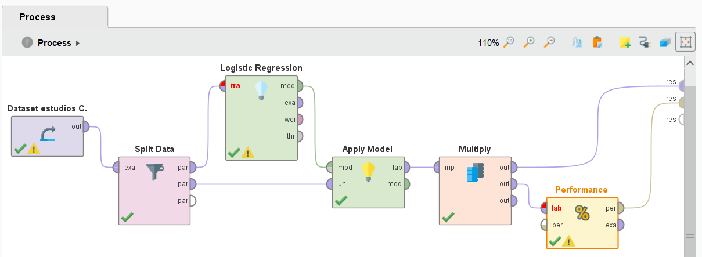
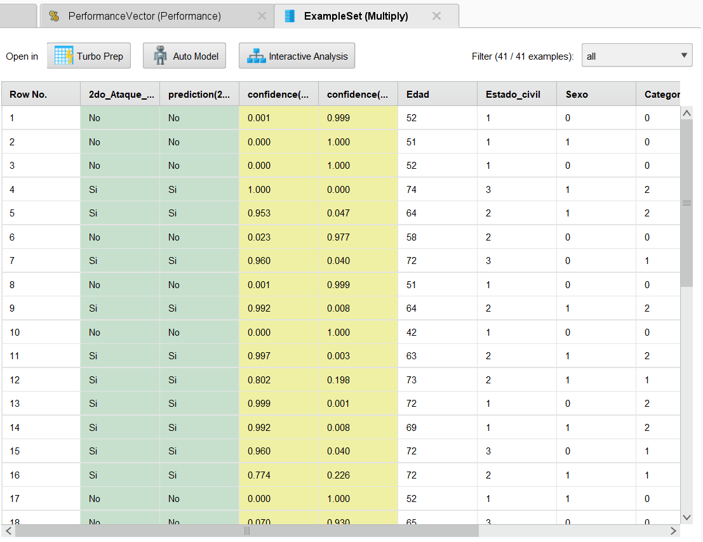
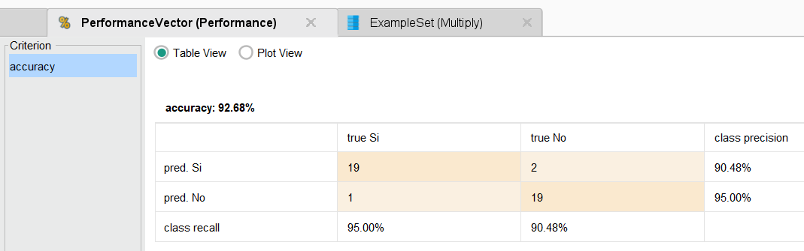

La idea de este projecto es generar un modelo de Machine Learning para predecir si una persona va a tener un segundo ataque cardiaco en base a estudios realizados en el dataset.
Si seguimos el modelo de izquierda a derecha empezamos por la carga de datos en base al dataset provisto con el operado Retrieve renombrado a Dataset estudios C.
Seguido de eso usamos el operado "Split Data" para generar las particiones de entrenamiento 70% y Test 30% fundamentales para que el modelo represente la realidad adecuadamente.
Luego usamos el operador de "Logistic Regresion" a modo de caja negra y le ingresamos la particion de entrenamiento y junto al operador "Apply Model" con la particion de test probamos el modelo.
Finalmente multiplicamos la salida con el operador "Multiply" y mandamos el resultado del modelo al operador "Performance" para ver su precision. El otro hilo lo mandamos hacia la salida result junto con los resultados de performance y ejecutamos el modelo.
Podemos ver en en la 2da columna se encuentra el valor de prediccion correcto y en la 3ra se encuentra la prediccion del modelo. A su vez vemos que la prediccion depende de los coeficientes de Si 4ta columna y coeficiente de NO 5ta columna todo calculado a partir de los pesos de cada caracteristica de las columnas restantes.
Podemos ver que la precision de este modelo es de 92.68% lo cual es bastante bueno pero no es Perfecto. A su vez vemos que en dentro de los errores hay 2 falsos SI y 1 falso NO segun la matriz de confusion.
descripcion
descripcion
comparación entre direntes metodos de Seleccion de caracteristicas en RapidMinner